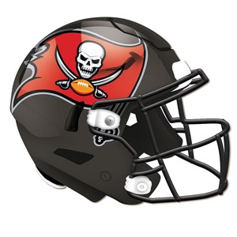

Tampa Bay Buccaneers
Team History
The Tampa Bay Buccaneers are a professional American football team based in Tampa, Florida. The Buccaneers compete in the National Football League (NFL) as a member club of the league's National Football Conference (NFC) South division. The club joined the NFL in 1976 as an expansion team, along with the Seattle Seahawks, and played its first season in the American Football Conference (AFC) West division. Prior to the 1977 season, Tampa Bay switched conferences and divisions with Seattle, becoming a member of the NFC Central division. During the 2002 league realignment, the Buccaneers joined three former NFC West teams to form the NFC South.